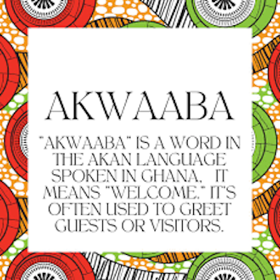
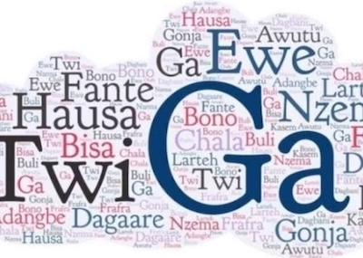

Ghanaian languages
Ghanaian languages are a huge aspect of their culture. The different languages spoken in Ghana varies from region to region with most languages having multiple dialects.
Ghana is a multilingual country with a wide range of ethnic groups and languages spoken throughout the region. The official language of Ghana is English, which was inherited from the British colonial era. English is used in government, education, and business, and is spoken fluently by many Ghanaians. However, it is important to note that English is not the first language of most Ghanaians.
Indigenous languages are an important aspect of Ghana’s linguistic diversity. There are over 70 different indigenous languages spoken in Ghana, with Akan, Ewe, Ga, and Dagbani being the most widely spoken. Akan is spoken by nearly half of the population, making it the most widely spoken indigenous language in Ghana. Ewe is spoken primarily in the southeast of the country, while Ga is spoken in and around the capital city of Accra. Dagbani is spoken in the north of the country, and Hausa is spoken by a smaller number of people in the northeast.
Indigenous languages play a crucial role in preserving Ghana’s cultural heritage. These languages are often closely tied to specific ethnic groups, and are passed down from generation to generation through oral traditions. Many indigenous languages have their own unique dialects and nuances, reflecting the rich diversity of Ghanaian culture.
Indigenous languages are also significant in daily life, with many Ghanaians using their native language in their homes and communities. In rural areas, indigenous languages are often the primary means of communication, and it is not uncommon for people to speak multiple languages depending on the context.
Despite the importance of indigenous languages, many are at risk of extinction. Factors such as urbanisation, globalisation, and the influence of English have contributed to the decline of many indigenous languages in Ghana. Efforts are being made to promote and preserve these languages, including initiatives to document and record oral traditions, as well as efforts to teach indigenous languages in schools.
English has played an important role in Ghana since the country gained independence from British colonial rule in 1957. The language is used extensively in government, education, and business, and is often seen as a symbol of social status and success. Many Ghanaians are fluent in English, and it is not uncommon for people to switch between English and their native language depending on the situation.
English has also influenced Ghanaian culture in a number of ways. Many English words and phrases have been adopted into Ghanaian languages, creating a unique blend of linguistic influences. English has also had an impact on Ghanaian literature, with many Ghanaian authors writing in English rather than their native language.
Ghana has over eighty different local languages. Some of the commonly spoken languages include Twi, which is a mother tongue for nearly half of the Ghanaian population,Euegbe, which is spoken by the ewes in the Volta region of Ghana, Ga which is spoken by the Gas of the great Accra region and Dagbani which is spoken by the Dagombas in northern Ghana. English is the official language of Ghana.
This detail plays a huge role in the tourism in the country. The fact that English is widely spoken makes communication easy for tourists.
Another language you would find the youth or males speaking in Ghana is Pidgin. pidgin also called broken English, is a mixture of English and other local dialects. Pidgin is also spoken in some other west African countries, but it is specific to each country.

